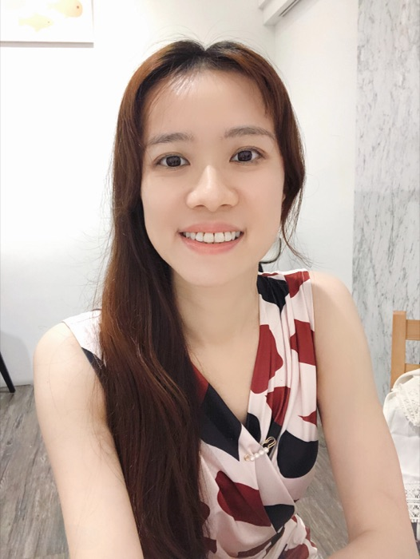

Zoe Lin林宜徵
Zoe (Yi-Cheng) Lin · a.k.a. Sebastian NagretsheiZoe (Yi-Cheng) Lin · 又名 Sebastian Nagretshei
Synesthetic Sound Painter & Composer視聽聯覺聲音畫家與作曲家
Her works, called "Synesthetic Compositions," employ precise spatial and technological approaches to sound placement, creating immersive, multi-sensory musical experiences that expand the boundaries of human perception.
她的作品被稱為「視聽聯覺創作」（Synesthetic Compositions），運用精準的空間與科技手法安排聲音的位置，創造出沉浸式、多重感官交織的音樂體驗，拓展人類感知的邊界。
Zoe Lin's work explores immersive sound, spatial perception, technology, and ecological imagination. Her practice moves between acoustic instruments, electronics, spatial audio, and audiovisual media, with particular attention to how sound can shape the perception of space, presence, memory, and dream.
林宜徵的創作探索沉浸式聲音、空間感知、科技與生態想像。她的創作實踐游走於原聲樂器、電子音樂、空間音訊與視聽媒體之間，特別關注聲音如何形塑空間、存在、記憶與夢境的感知經驗。